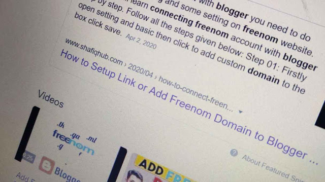

Hi guys, It's a happier day for me. I got good news(not that😁) from Google Search Console, a mail about one of my post. Today I will tell you how one of my post goes viral and added to featured snippet by google search engine. I was really amazed when I got this news. I want to share it with you.
The secrets through which I ranked my post to No. 01. If you are a beginner in blogging, I really suggest you to know this trick. This trick will be helpful for you.
There are many things you need to know whenever you type a post like: purpose of post, length, keywords volume, search volume, category, description,.............etc.
These are very necessary things you should include and think while writing. But today I am not intended to tell you these boring theories of blogging. I will give you cheat codes that I got from my whole experience of blogging. Today I will answer to these most typed queries such as: How can I add my post to featured snippet? How I rank up my site in just few months? So let's get started...............

Time is everything
It is very simple to state this sentence but difficult to implement it. If you are a blogger or e-content writer then you may notice that it is impossible to get thousands of hits/views by just writing few posts. Sometimes a post goes viral by itself, on the other hand some posts takes a long time to acquire audience and become viral. My post that gone viral and added to featured snippet was six months old.
While you are writing a post you should not be in this misunderstanding that this post will get thousands or mil
onons of views after a day from the date of publish. I suggest you to understand this universal fact of life. I say "
Play until you won". I will tell you only thing that you need to
wait until your post become viral. Google Search Engine is built in such a way that it takes time to understand the quality, reliability and efficiency of a web page to know whether this page is suitable for a particular query. So you should give time to your post. It can be few months or a years. As I got rank my post in six months.
Making trend is better then following trend
This works only for
beginners. Because beginner often do this mistake. They write content which is already in trending. In this way they compete the older websites which have millions of followers and are the jewels of google news page.
I got this experience from the post that I am talking about. When I was typing that post, I don't searched the keywords of that post even for a single time. Always try to make trend not to follow it. This time you need to make you website visible to search engine not to show your website in the crowd of millions. Even you try to write a beautiful content but your rank will be below 200 rank and no one will scroll down to see you particular page. For now you need not to follow the trend. Write something catchy and attractive.
Share your personal experience
Featured snippet always contains relevant answers of different questions/queries written with the personal experience of author.
Sharing personal experience in the post make the content soulful. Think like a reader, a reader is not so much interested in What is the niche of your website, but want to know what you feel about that topic you are writing.
I have added all the experiences in that post. It is the fact that; Everyone experienced something in his/her profession, so he/she need to get others experience to determine his/her life or work. So tell your experience to your audience. May some likes your ideology a make your content precious for you.
That group of people will rank up your post. So know what your audience want. You fulfill their desire and they automatically fulfill your desire.
Make something attractive In Your Blog:
It is a well known psychological fact that beautiful/handsome people get job faster than ugly. So you need to make your website so attractive. Assume someone visit to your website for first time and he/she will get the interface of only writings and links. He/she will never visit again to your website.
This will create a negative impact on your site.Try to visit your own website as a viewer. Fix what problem occur when someone will visit to your website. Change the color of theme, text fonts, text size, styling etc. Guess which theme is more attractive. These are all the things that you can customize within your blog to retain audience on your post.
If regular audience retention increases then your web page rank will boost very fast. So to make it a regular featured snippet you need to make your website more attractive.
Write Sky-crapper Content
The most essential thing in blog writing is
your content, and there are different ways to make content more attractive and catchy.Lot of people do experiments to make their content more tremendous and attractive.
But I prefer to write a sky-crapper content. You may wonder to know about sky-crapper contents, because it is the only thing for beginners that boost your website visibility to the search engine. Need not to think more if you want to know how to write a sky-crapper content just do these simple steps:
- Open browser a type your keyword or query.
- Check out the first result page.
- Yaah! That's it. Let me explain you more.
A sky-crapper content can be created if you adds up 5-10 time better content than what you just found. If this page is ranking then we are sure that lot of people would linked to it.
I know it is very difficult to compete the top ranking page, but there is only option to you. Now the next step you need to do is; Take the topic and idea from this page and do more with it. Include everything which is not being mentioned. Think if this is no.1 ranked and you do 5-10 time better than this, your page will automatically added to featured post.